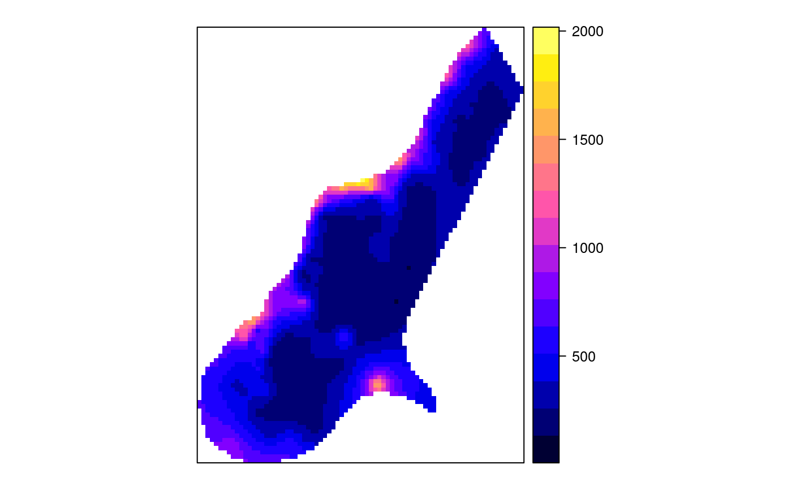

krigeTg.RdTransGaussian (ordinary) kriging function using Box-Cox transforms
krigeTg(formula, locations, newdata, model = NULL, ..., nmax = Inf, nmin = 0, maxdist = Inf, block = numeric(0), nsim = 0, na.action = na.pass, debug.level = 1, lambda = 1.0)
| formula | formula that defines the dependent variable as a linear
model of independent variables; suppose the dependent variable has name
|
|---|---|
| locations | object of class |
| newdata | Spatial object with prediction/simulation locations;
the coordinates should have names as defined in |
| model | variogram model of the TRANSFORMED dependent variable, see vgm, or fit.variogram |
| nmax | for local kriging: the number of nearest observations that should be used for a kriging prediction or simulation, where nearest is defined in terms of the space of the spatial locations. By default, all observations are used |
| nmin | for local kriging: if the number of nearest observations
within distance |
| maxdist | for local kriging: only observations within a distance
of |
| block | does not function correctly, afaik |
| nsim | does not function correctly, afaik |
| na.action | function determining what should be done with missing values in 'newdata'. The default is to predict 'NA'. Missing values in coordinates and predictors are both dealt with. |
| lambda | value for the Box-Cox transform |
| debug.level | debug level, passed to predict; use -1 to see progress in percentage, and 0 to suppress all printed information |
| … | other arguments that will be passed to gstat |
Function krigeTg uses transGaussian kriging as explained in
http://www.math.umd.edu/~bnk/bak/Splus/kriging.html.
As it uses the R/gstat krige function to derive everything, it needs in addition to ordinary kriging on the transformed scale a simple kriging step to find m from the difference between the OK and SK prediction variance, and a kriging/BLUE estimation step to obtain the estimate of \(\mu\).
For further details, see krige and predict.
an SpatialPointsDataFrame object containing the fields:
m for the m (Lagrange) parameter for each location;
var1SK.pred the \(c_0 C^{-1}\) correction obtained by
muhat for the mean estimate at each location;
var1SK.var the simple kriging variance;
var1.pred the OK prediction on the transformed scale;
var1.var the OK kriging variance on the transformed scale;
var1TG.pred the transGaussian kriging predictor;
var1TG.var the transGaussian kriging variance, obtained by
\(\phi'(\hat{\mu},\lambda)^2 \sigma^2_{OK}\)
N.A.C. Cressie, 1993, Statistics for Spatial Data, Wiley.
library(sp) data(meuse) coordinates(meuse) = ~x+y data(meuse.grid) gridded(meuse.grid) = ~x+y v = vgm(1, "Exp", 300) x1 = krigeTg(zinc~1,meuse,meuse.grid,v, lambda=1) # no transform#> [using ordinary kriging] #> [generalized least squares trend estimation] #> [using simple kriging]#> [using ordinary kriging]summary(x2$var1.var-x1$var1TG.var)#> Min. 1st Qu. Median Mean 3rd Qu. Max. #> 0 0 0 0 0 0summary(x2$var1.pred-x1$var1TG.pred)#> Min. 1st Qu. Median Mean 3rd Qu. Max. #> -2.274e-13 0.000e+00 0.000e+00 -4.690e-15 0.000e+00 2.274e-13lambda = -0.25 m = fit.variogram(variogram((zinc^lambda-1)/lambda ~ 1,meuse), vgm(1, "Exp", 300)) x = krigeTg(zinc~1,meuse,meuse.grid,m,lambda=-.25)#> [using ordinary kriging] #> [generalized least squares trend estimation] #> [using simple kriging]summary(meuse$zinc)#> Min. 1st Qu. Median Mean 3rd Qu. Max. #> 113.0 198.0 326.0 469.7 674.5 1839.0summary(x$var1TG.pred)#> Min. 1st Qu. Median Mean 3rd Qu. Max. #> 130.7 229.7 299.5 403.2 521.3 1894.3